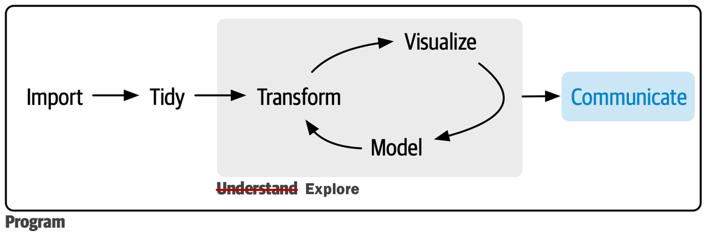
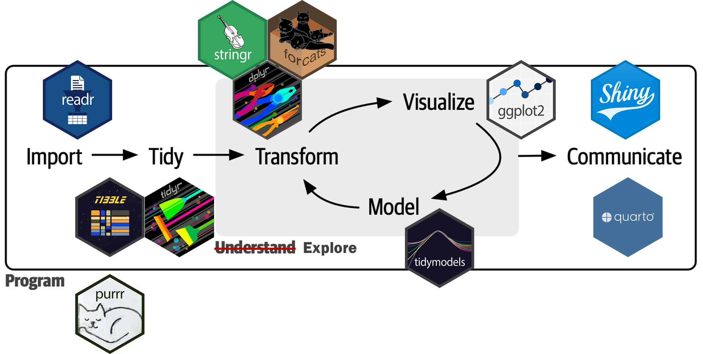

R Lecture 3
Quarto로 대시보드 만들기
Quarto로 대시보드 만들기
Communication in a data science process

Packages

Thanks to Quarto

Quarto: Definition
“과학적, 기술적 출판을 위한 오픈소스 시스템(an open-source scientific and technical publishing system)”
- 오픈소스 저작 시스템
다양한 형식의 저작물(노트, 연구 논문, 프레젠테이션, 대시보드, 웹사이트, 블로그, 서적 등)을 다양한 디지털 포맷(HTML, PDF, MS Word, ePub 등)으로 출판할 수 있게 해주는 도구
적용 분야의 스케일
개인 스케일: 노트, 레포트, 연구 논문, 프레젠테이션, 블로그 등의 작성 도구
그룹 스케일: 프로젝트의 원할한 진행을 위한 협업 프레임워크
사회 스케일: 과학 커뮤니티의 재현성(reproducibility) 고양
Quarto: Functions

Quarto: Syntax
마크다운(markdown) 언어: 팬독(pandoc)
마크업(markup) 언어: 다큐먼트의 구조와 포맷을 관장하는 텍스트-엔코딩 시스템
사용자의 편의성을 크게 향상시킨 마크업 언어
Quarto 다규먼트:
.qmd- 프로그래밍 언어 + 워드프로세서
Quarto: Rendering
knitr패키지:.qmd를.md로 전환pandoc:.md를 다양한 디지털 포맷으로 전환

Quarto documents: Basic structure
YAML 헤더(header)
- 일종의 메타데이터
- 다큐먼트의 전반적인 사항을 관장
코드 청크(code chunk)
- 프로그래밍 언어가 들어가는 부분
- R 스크립트 파일
마크다운 텍스트(markdown text)
- 워드프로세서처럼 텍스트를 작성(도표 포함)

YAML header
| key | 설명 |
|---|---|
| title | 다큐먼트의 제목 |
| date | 다큐먼트 작성 날짜 |
| author | 다큐먼트 저자 이름 |
| format | 다양한 포맷 관련 사항의 지정 |
| toc | 목차 삽입 |
| number-section | 섹션 제목에 자동 번호 부여 여부 |
| execute: echo | 소스 코드의 포함 여부를 글로벌하게 설정, 보통 true |
| execute: warning | 경고 메시지를 산출물에 나타나게 할지를 글로벌하게 설정, 보통 false |
| editor | 비주얼 에디터와 소스 에디터 중 선택, 보통 visual |
Code chunck
| Option | Run code | Show code | Output | Plots | Messages | Warnings |
|---|---|---|---|---|---|---|
eval: false |
X | X | X | X | X | |
include: false |
X | X | X | X | X | |
echo: false |
X | |||||
results: hide |
X | |||||
fig-show: hide |
X | |||||
message: false |
X | |||||
warning: false |
X |
Markdown text
비주얼 에디터(visual editor) vs. 소스 에디터(source editor)
마크다운 언어의 사용자 편이성을 한 번 더 강화한 것


Zotero

Web publication
Quarto Pub(https://quartopub.com/)
GitHub Pages(https://pages.github.com/)
Netlify(https://www.netlify.com/)
Quarto Pub

R dashboard tools: A transition
An example

An example
Layout 1: Rows and Columns
## Row {height=70%}
Card 1
## Row {height=30%}
### Column {width=40%}
Card 2-1
### Column {width=60%}
Card 2-2 
Layout 2: Tabsets
## Row {height=70%}
Card 1
## Row {height=30% .tabset}
### Column
Card 2-1 {width=50%}
### Column
Card 2-2 {width=50%}
Layout: Pages
# Page A
## Row {height=70%}
Card 1
## Row {height=30%}
### Column {width=40%}
Card 2-1
### Column {width=60%}
Card 2-2
# Page B
Card 3
Navigation Bars: YAML header

title
author
format: dashboard
logo
nav-buttons
scrolling: true
theme: 25 bootswatch themes(https://quarto.org/docs/dashboards/theming.html)
Sidebars

Cards: Graphs
그래프 카드: 그래프 하나를 만들어내는 코드 청크
ggplot2패키지,plotly패키지
#| title: "Histogram of GDP per capita"
library(tidyverse)
library(gapminder)
gapminder |>
filter(year == 2007) |>
ggplot(aes(x = gdpPercap)) +
geom_histogram()Cards: Tables
테이블 카드: 테이블 하나를 만들어내는 코드 청크
DT패키지,knitr패키지
#| title: Lookup Table
library(DT)
datatable(gapminder, filter = "top",
options = list(
pageLength = 5, autoWidth = TRUE
))Cards: Maps
지도 카드: 지도 하나를 만들어내는 코드 청크
ggplot2패키지,leaflet패키지
#| title: A Reference Map
library(leaflet)
leaflet() |>
addTiles()Cards: Texts
- 텍스트 카드: 텍스트 박스 하나를 만들어내는 div
{.card}탭과title속성
::: {.card title="Text"}
This is my first dashboard.
:::Cards: Valueboxes
밸류박스 카드: 밸류박스 하나를 만들어내는 코드 청크
아이콘: bootstrap icon(https://icons.getbootstrap.com/)
컬러: 8개(https://quarto.org/docs/dashboards/data-display.html)
#| content: valuebox
#| title: "Number of Countries"
n_countries <- gapminder |> distinct(country) |> nrow()
list(
icon = "asterisk",
color = "primary",
value = n_countries
)Web publication
- Quarto Pub(https://quartopub.com/)